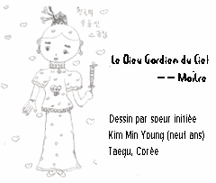

|
Questions et réponses choisies
|

Prononcé par Maître Suprême Ching Hai
Brésil, le 18 juin 1989 (à l'origine en anglais)
Q: Est-ce que les esprits naissent ou bien est-ce qu'un nombre prédéterminé existe déjà ?
M: Certains sont vieux, certains sont nouveaux. La plupart sont vieux. Les vieux sont ceux qui sont nés humains et qui n'ont jamais fait beaucoup de mal. Ils continuent à revenir encore en tant qu'humains.
Les nouveaux sont ceux qui viennent du règne minéral, du règne floral, et du règne animal. Ils évoluent et deviennent des hommes. Ceux-là sont un peu ternes d'esprit, un peu lents dans leurs réactions, peut-être même violents. S'il a tiré son origine d'une pierre et qu'il soit à présent devenu un homme alors il ressemblera à une pierre - froid, l'air absent, stupide, têtu. S'il était un arbre dans sa dernière vie, alors, il sera plus calme, plus gentil mais aussi hébété et pas très intelligent. Ils ont besoin de nombreuses réincarnations pour apprendre la perfection.
Certains viennent du royaume des cieux, non pas du royaume de Dieu mais du royaume des cieux, comme les anges, certains devas ou esprits célestes. Ils descendent sur Terre et deviennent des hommes car ils veulent pratiquer la perfection. Ils désirent rencontrer un maître et obtenir la libération des naissances et des morts. Ils veulent devenir eux-mêmes des Maîtres. Donc, voilà les différentes sortes d'esprits, vieux et nouveaux.
Prononcé par Maître Suprême Ching Hai
Dublin, Irlande, le 7 juin 1999 (à l'origine en anglais)
Q: Maître, est-ce que les anges et les guides spirituels existent ? Quelle est leur importance dans notre évolution spirituelle ? Est-il plus facile de communiquer avec eux plutôt qu'avec Dieu ?
M: Ils existent, ils sont partout. C'est simplement que nos yeux spirituels ne sont pas ouverts, si bien que nous ne les voyons pas. Quand nous sommes illuminés, nous pouvons les voir. Certaines personnes, même si elles ne pratiquent pas délibérément une forme de méditation mais qu'auparavant elles ont eu l'occasion d'être bénies par un autre maître, peuvent par hasard voir aussi des anges, des guides spirituels. Ils nous aideront jusqu'à un certain point, mais Dieu seul peut nous aider tout le long du chemin. Donc, au début, les anges et les guides spirituels sont probablement là, tout simplement à nos côtés pour nous aider un petit peu dans nos besoins essentiels. Plus tard nous deviendrons notre propre maître et à ce moment-là Dieu est notre seul guide. Mais les anges circulent tout le temps. Ils nous serviront et nous assisteront.
Prononcé par Maître Suprême Ching Hai
Amsterdam, Pays-Bas le 9 mai 1999 (à l'origine en anglais)
Q: Que pensez-vous des anges ?
M: Ce sont mes amis (applaudissements). Ils font tout ce que je veux, ils sont très serviables. Le Père les envoie pour m'aider. Quand vous serez des initiés, je Lui demanderai aussi de vous fournir quelques anges pour vous assister personnellement - au moins cinq par personne. Est-ce assez ? (Applaudissements)
Vous pouvez les voir pendant la méditation, vous pouvez demander leur aide. Quelquefois vous pouvez les voir les yeux ouverts.
Prononcé par Maître Suprême Ching Hai
Portugal, le 7 mai 1999 (à l'origine en anglais)
Q: Vous insistez sur la connexion directe avec Dieu. Comment voyez-vous la célèbre hiérarchie cosmique et ses médiateurs potentiels ? Tels que les anges, les archanges, les chérubins, les séraphins, etc. ?
M: Ce sont nos amis. C'est certain ! Ils sont tous auprès de nous au cours de notre ascension. Je vous enseignerai comment les saluer et les croiser rapidement. C'est vrai que si vous ne savez pas vous y prendre et si un professeur ne vous a pas présenté à eux, ils peuvent quelquefois causer des ennuis. Mais nous vous présenterons à eux et nous leur dirons de prendre soin de vous.
Les anges sont parfois nos serviteurs. Plus vous allez haut, plus ils vous vénèrent. Parfois vous allez vers les hautes sphères et tous les anges, tous les êtres sur cette planète se mettent en ligne pour vous vénérer. Ils sont si heureux de vous servir, ils se nomment eux-mêmes vos serviteurs.
|